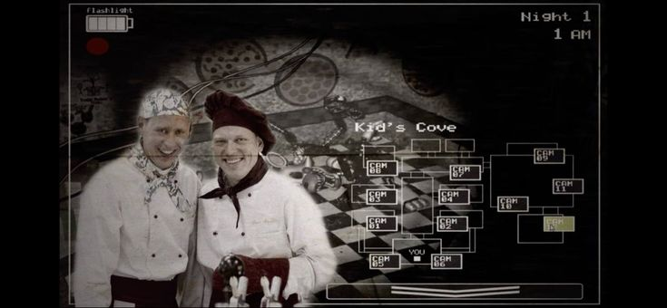

Увидели, что кто-то не поставил ;
Сеня и Федя
Год создания
2012-2016
Оригинальное название
Огузки во FNAF
Тэги
#Огузок
Мем представляет собой очень жизненную ситуацию. Вы с другом смотрите чат коворкинга, где какой-то молодой человек или девушка
просит помощи в разработке проекта. И вы увидели, что этот невнимательный человек
не поставил знак ";", это очень жизненная ситуация каждого айти специалиста (этот мем стоит на равне с print('hello world'))